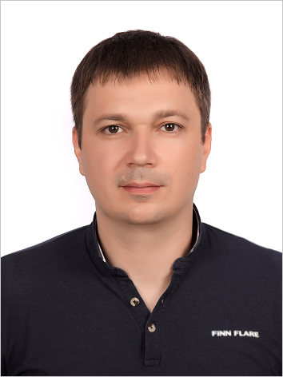

Nikitin Dmitry
Male, 37 years, born on 3 July 1982

Contact Information:
- +7 (927) 5000050 (Viber, WhatsApp, Telegram) — preferred means of communication
- +7 (988) 9875577
- fairmentat@mail.ru
- Skype: dmitrii_nikitin
- Facebook: fairmentat
Reside in: Volgograd
Not ready to relocate, ready for business trips
Purpose and Presentation
The purpose of studying at the RSS school is the opportunity to gain practical skills in HTML / CSS and JS,
communication with professional programmers, familiarity with the community and the possibility of employment.
At the moment, I am successfully getting my second higher education at Volgograd State Technical University with
a degree in Automatic Design and Search Engine Design Systems, in my second year out of three. During this time,
completed a training course in C ++ (procedural programming) and passed an control work on solving mathematical equations.
I got acquainted with the book “C ++ Programming Language. The basic course is authored by Stanley B.
Lippman and completed an online introduction course in C ++. Passed the C # training topic and passed the test
work done using WinForms. In 2019, studied Java, in connection with this, purchased the JavaRush online course,
completely covered Java Syntax and Java Core topics, solved more than 400 practical tasks, partially read Herbert Schildt’s
books “Java 8. A Guide for Beginners,” “Learning Java »Sierra Katie. As part of the university’s curriculum, the Weather
application for the Android OS has been written in the Android Studio IDE. I am actively continuing to study everything
related to the technology stack for Java Junior (SQL, Git, HTML / CSS).
Skills
Basic level:
- Assembly language
- C++
- С#
- Java
- MySQL
- Microsoft SQL
- HTML/CSS
- Git
Code examples:
Education:
Examination works related to programming in the following subjects at the university:
- Fundamentals of Programming (C ++)
- Object Oriented Programming Basics (C #)
- Machine Dependent Languages (Assembler)
- Mobile and Embedded OS (Java)
- Databases (MS SQL + C #)
- System Software Basics (C ++ + C #)
See examples
Work experience
- No programming experience
- Self-employed - Apple Computer Tuning and Training Specialist (2017 -….)
- PJSC Rostelecom - Territorial Manager for Volgograd (2016)
- BIS LLC - Director of Sales Service (2016)
- Media Markt LLC - Head of Computer Technology (2015)
- GameZone LLC - Director of the group of stores (2010-2015)
- PJSC MEGAFON - Head of Sales Office (2007-2010)
Languages:
- Russian — Native
- English — B1 — Pre-intermediate